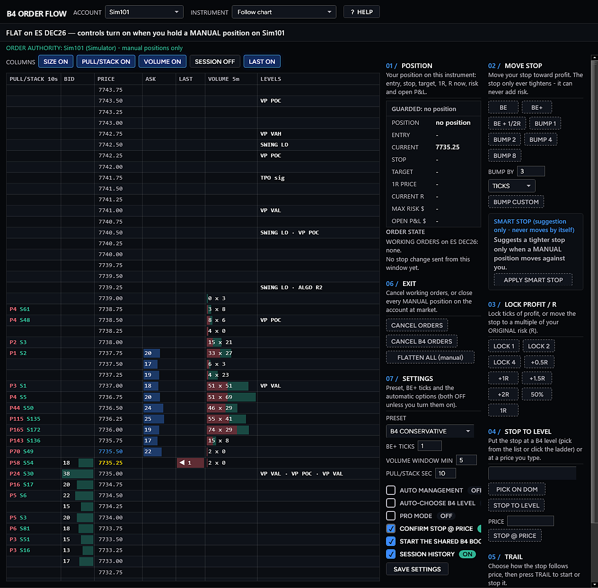

- Color-coded time and sales with normal, large and whale size tiers and a separate Big lane
- 36 tape-reading detectors, from sweeps, absorption and refills to stop runs, delta flips and exhaustion, each with its own sound, flash and color
- Spoken callouts and a 224-statement market squawk, placed against your B4 levels, with every line explained in plain English
- Every B4 tool on your charts feeds the tape, DOM and scanner, and a live feeds readout shows which tools are reporting
- A double-click warning that flags accidental double entries so you can check your mouse. It never touches your orders
- The tape tells you when a B4 CoPilot Pro signal was not taken and why, and speaks where price sits against the B4 Algo Pro brackets
- Level II depth with stacking, pulling and liquidity walls, optional GEX levels on the ladder (off by default), a market scanner, and stop, exit and flatten controls on the DOM ladder for your own manual positions. Stops only move tighter, and an exit can never be bigger than your position.
One window, three views
- The Tape: market levels, signals, order-flow evidence and context, with the audio squawk box. Informational only; it never places orders.
- The DOM: Level II depth, stacking and pulling, liquidity walls and order-book imbalance, with stop, exit and flatten controls for your own manual positions.
- GEX levels on the DOM (optional): the gamma flip, call wall and put wall on the ladder, from an options chain file you provide or a clearly labeled estimate, with the source and time on every level. Display only and off by default; these levels never place, move or size an order.
- The Scanner: multi-instrument monitoring on closed bars that surfaces B4 signals and conditions worth a closer look. Scan only; it never places, changes or cancels orders.
Inside the Tape
- Color-coded time and sales: prints merged and tiered as normal, large and whale, with a separate Big lane and an Events-only filter.
- 36 tape-reading detectors: sweeps, absorption, refills, stop runs, pulling and stacking, delta flips and divergences, exhaustion, trapped traders, failed auctions, wide spreads and quote flicker, each with its own sound, flash and color.
- Delta, speed and pressure: a session delta sparkline, buy-share gauge, tape-speed meter, order-book imbalance readouts and a volume-at-price ladder with imbalances.
- Level-aware callouts: a levels radar with B4 Algo Pro levels, volume profile POC, VAH and VAL, VWAP, prior-day and overnight levels, swings and TPO, so every callout says where it happened.
- Spoken callouts and market squawk: 224 plain-English statements in 11 categories, spoken only when the evidence is there, with Brief, Normal and Full detail.
- Audio modes: Silent, Alert, Pro, Teaching, Mentor and Execution-safe, plus Quiz and Replay analyst on Playback.
- Event Memory: follow each B4 setup from fired to confirmed or invalidated, with why it is not confirmed yet and what to watch next.
- Scalp readout at B4 Algo Pro levels: developing, confirmed or invalidated, with execution risk and a "Still looking for long / short" lead-in.
- Position-aware voice: speaks from your long, short or flat view and can suggest a stop price to guard an open trade. It never moves a stop.
- Cross-market context: an optional ES / NQ readout of whether the markets are confirming or diverging.
- Bracket-aware voice: says when price is above, inside or below the B4 Algo Pro brackets, when it approaches one, and when the brackets rotate.
- Named bar series: every candle callout names the bars it reads, for example the ES 3-minute Tape bars.
- B4 CoPilot Pro watch: a chip shows whether B4 CoPilot Pro is armed, paused or out of hours on your instrument, and the Tape says when a CoPilot signal was not taken and why.
- Chart markers: the levels, setups and confirmations the Tape calls out appear as short labeled lines on your chart.
- Follows your B4 Main Chart and saves with your NinjaTrader workspace. The Tape reads only; it never places, changes or cancels orders.
Take the full tour of each view on the B4 Signals home page.
What's inside (18)
- The Tape Control Center > New > B4 Order Flow
- The DOM B4 Order Flow window
- The Scanner B4 Order Flow window
- B4 Order Flow window Control Center > New > B4 Order Flow
- Market squawk (224 statements) Tape settings
- 36 tape-reading detectors Tape settings
- Event Memory Tape
- Scalp readout at B4 Algo Pro levels Tape
- Cross-market context (optional) Tape settings
- Position-aware voice Tape
- Bracket-aware voice Tape
- B4 CoPilot Pro watch chip Tape
- Trade Confirm Control Center > New > B4 Trade Confirm
- DOM trade controls DOM
- Smart Stop (suggest only) DOM
- GEX levels on the DOM (off by default) DOM settings file
- Double-click warning automatic
- Feeds readout (8 tools) Tape, DOM and Scanner
Best forOrder-flow traders who live in the tape and on the ladder.
Availability: Presale · ships with the B4 V4 release.
Preview


VISUALIZATION · Enhanced visualizations based on NinjaTrader 8 screens from a simulation account; window titles updated to the current product name. Not a live trading result. Select an image to open it full size.
For educational and research purposes only. Not trading advice. Trading futures and equities involves substantial risk of loss. No indicator, strategy or AI tool can guarantee a trading outcome.